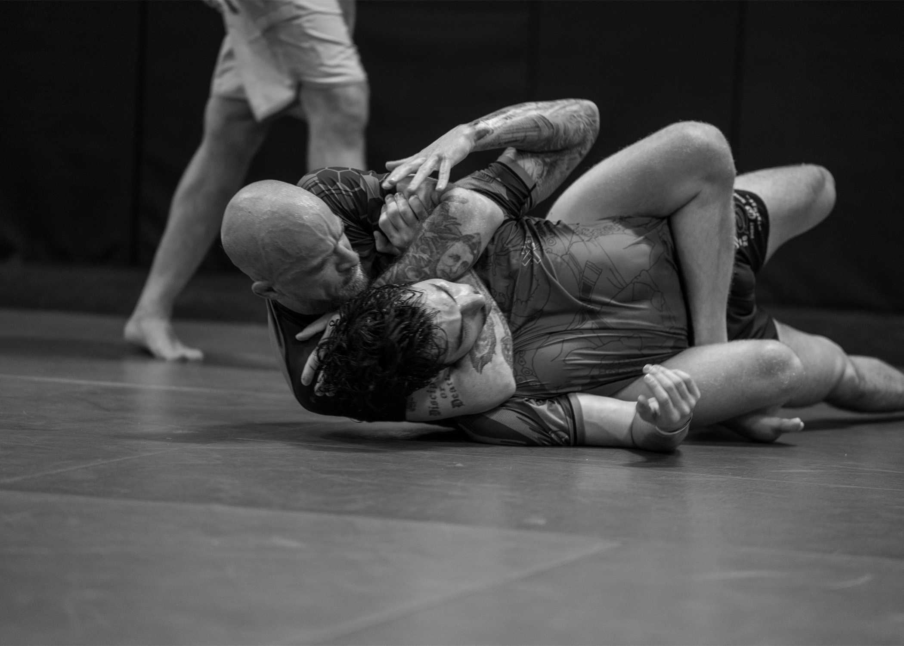
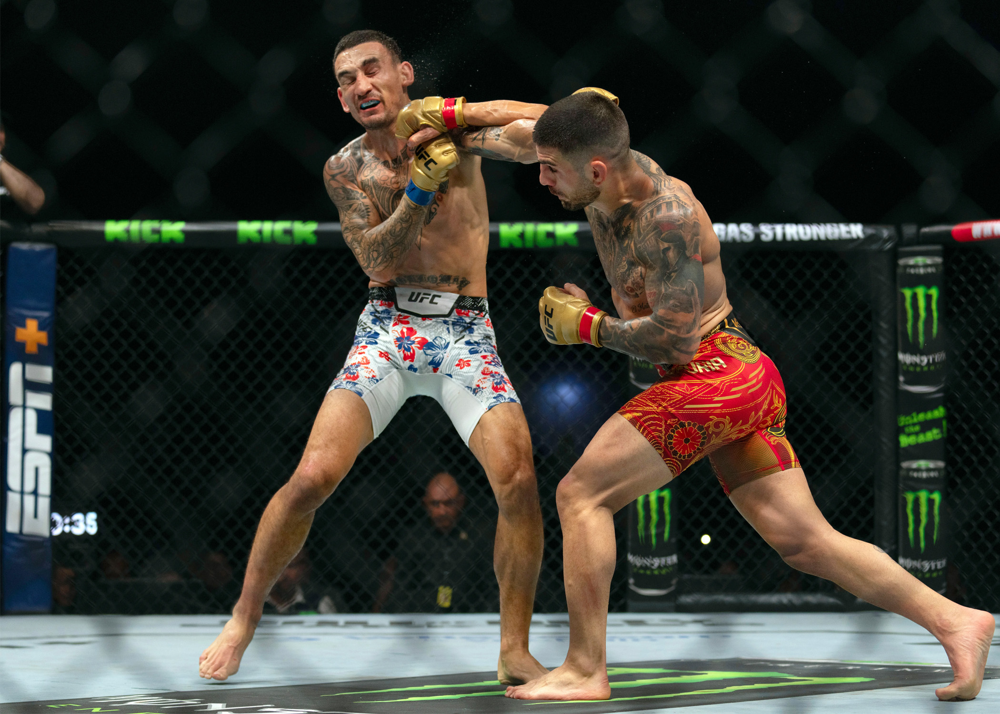

I'm a creative and dedicated person towards learning and trying out a variety of different stuff. I enjoy pushing myself outside of my comfort zone to improve handy skills. I hope to continue to improve in web design and work on skills i've never done before.
I enjoy hanging out with friends and having a good time with them anywhere. I enjoy playing a wide variety of sports because I like anything that keeps me active and moving. In my free time, I like to relax and play video games and be on my phone.
 I got interested in Graphic Design in 9th grade because from taking computer science in 6th and 7th, I decided that Graphic Design sounded fun and a good skill to learn. Graphic Design led me to continue on into Graphic Design in 10th grade because theres so much more to learn and I want to develop even more skills. I hope this year to learn a ton of new skills and to further improve my old skills.
 I'm a creative and dedicated person towards learning and trying out a variety of different stuff. I enjoy pushing myself outside of my comfort zone to improve handy skills. I hope to continue to improve in web design and work on skills i've never done before.
I'm a creative and dedicated person towards learning and trying out a variety of different stuff. I enjoy pushing myself outside of my comfort zone to improve handy skills. I hope to continue to improve in web design and work on skills i've never done before.